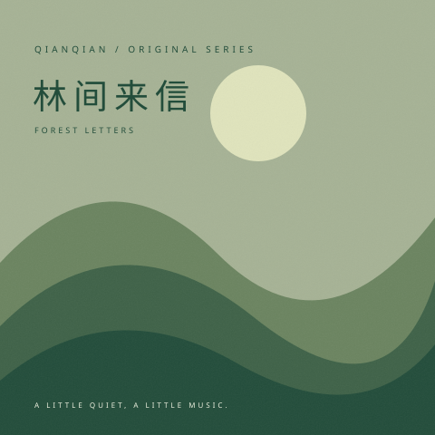

音乐收藏馆
/
本地音乐
/
浅浅
FM
把心情调到喜欢的频率
管理频道

专注
chill
运动
平静
选一种心情，开始听。
从你收藏的音乐里，遇见此刻的心情。
调整分类
00:00
00:00
YOUR PERSONAL COLLECTION
本地音乐
收藏每一首，想要单曲循环的心情。
管理歌单
导入音乐
播放全部
所有好音乐，都值得被好好收藏
#
歌曲 / 歌手
专辑
时长
返回音乐库
浅浅静听
/
JUST LISTEN
SIDE A
A MOMENT FOR YOURSELF
NOW SPINNING
导入 LRC 歌词
取消
保存
把喜欢的音乐，放进来。
支持音频、封面和 LRC 歌词